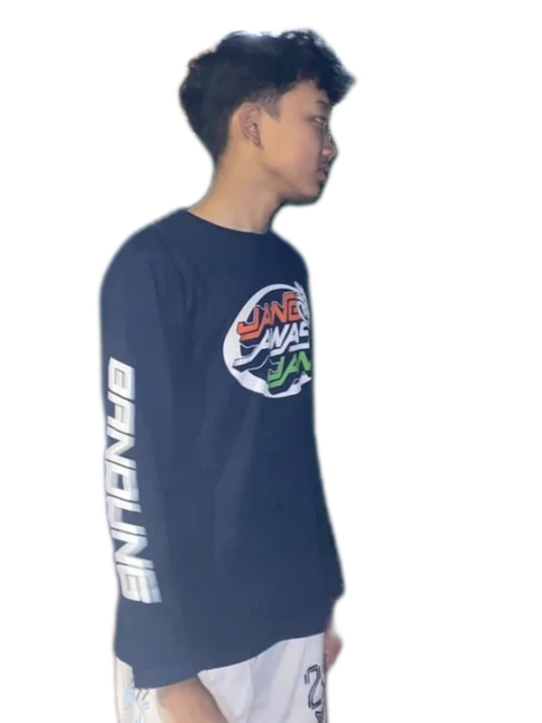

Percaya lewat bukti
Bukan "percaya saja". Setiap catatan bisa diperiksa siapa pun, kapan pun.
BerandaTentang
Kami siswa yang bosan bertanya-tanya ke mana uang kelas pergi, jadi kami membuat buku kas yang bisa dilihat dan diperiksa siapa pun.
Senin, 06.40 · XI-F2
Pertanyaan yang dipikirkan banyak orang, tapi jarang ada yang berani menanyakannya.


Jam istirahat pertama
Hanya saja tidak ada yang bisa memeriksa, dan tidak ada yang mengingatkan.

Malam hari, 22.15
Ardellio membuka laptop dan mulai menulis kode sampai larut.

Rabu, hari uji coba
Setiap catatan terkunci dengan catatan sebelumnya, lalu disahkan Wali Kelas lewat Telegram.
Senin berikutnya
Tidak ada lagi tebak-tebakan. Yang ada hanya catatan yang rapi dan bisa dibuka siapa saja.
Dan cerita ini belum selesai
Tiga kursi lagi menunggu pemiliknya.
Lihat hasilnyaArdellioRafaNabilaPerjalanan
Fondasi pertama: dashboard publik, kode QR, dan rantai hash SHA-256 supaya perubahan diam-diam langsung ketahuan.
SelesaiSetiap catatan menunggu persetujuan Wali Kelas. Iuran diverifikasi per minggu, dan nama Wali Kelas ikut terkunci di hash.
SelesaiNotebook demo untuk presentasi, dan Wali Kelas bisa menyetujui langsung dari dashboard tanpa Telegram.
SelesaiAntarmuka baru: langit yang hidup, gerak yang halus, dan alur masuk sampai keluar. Prototipe statis sedang diuji.
Sedang dikerjakanDesain yang disetujui dipindahkan ke template aplikasi, lalu diuji bersama kelas.
BerikutnyaYang kami pegang
Bukan "percaya saja". Setiap catatan bisa diperiksa siapa pun, kapan pun.
Belanja besar diputuskan bersama, bukan oleh satu orang.
Offline-first, tanpa CDN, hemat kuota dan baterai.
Data kas tidak dikirim ke layanan pihak ketiga. Cuaca langit hanya jika kamu menyalakannya.
Tim
Kelompok 5, kelas XI-F2 SMA Kartika XIX-1 Bandung. Anggota lain akan menyusul.
Dibuat dengan
Pilihan teknologinya sengaja dibuat ringkas, supaya mudah dibaca, diuji, dan dijalankan kelas mana pun.
Buka dashboard dan lihat sendiri ke mana uang kelasmu pergi.
CEKAS · Kelompok 5 · Kelas XI-F2 SMA Kartika XIX-1 Bandung. Foto langit: Lance Vanlewen. Foto cuaca: Ranjithsiji (mendung), Muhammadphoto (petir), Kulish Kateryna (bintang), semuanya via Wikimedia Commons, CC BY-SA 4.0 dan CC BY 4.0, diubah ukuran dan warnanya. Font: Inter Tight dan Bricolage Grotesque (SIL OFL).